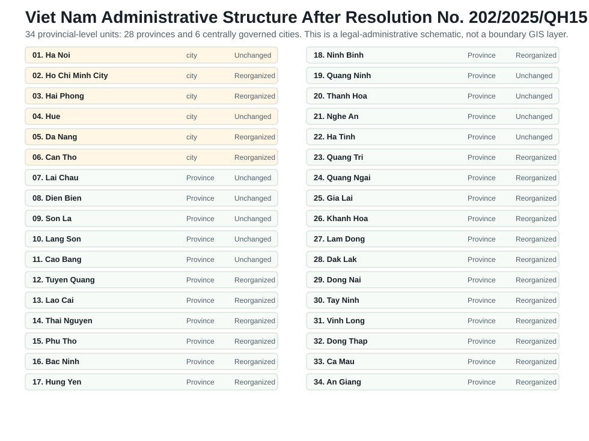
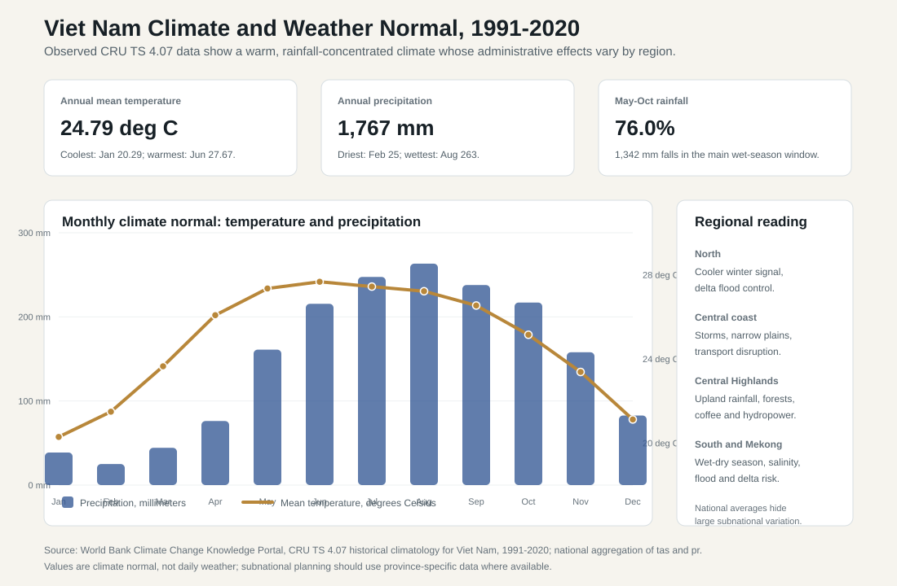

1.3 Geography and Administrative Divisions
ASEAN comparative lens (2026). Vietnam should be read in ASEAN comparison as ASEAN's most prominent party-led, export-manufacturing upgrading case. Unlike the Philippines' service-remittance profile, Thailand's older industrial-tourism base, Malaysia's resource-industrial federal structure, or Indonesia's archipelagic domestic-market scale, Vietnam's comparative issue is how a socialist party-state manages very open global production networks. For this section, the regional comparison should locate the country inside ASEAN by scale, geography, income level, regime type, and core development model before moving into national details. Local comparable indicators show: population 100.99 million (2024), rank 3 among the nine ASEAN reports in this workspace; GDP US$476.39 billion (2024), rank 4 among the nine ASEAN reports in this workspace; GDP per capita US$4,717 (2024), rank 5 among the nine ASEAN reports in this workspace; real GDP growth 7.09% (2024), rank 1 among the nine ASEAN reports in this workspace; government effectiveness 0.09 (2023), rank 6 among the nine ASEAN reports in this workspace; internet use 84.15% (2024), rank 4 among the nine ASEAN reports in this workspace. Use `sources/documents/regional/asean_comparative_lens_2026.md` together with ASEANstats, ASEAN Secretariat materials, and the country processed-indicator files before making cross-ASEAN claims.
Vietnam's geography makes administration a territorial art. The country stretches along the eastern edge of mainland Southeast Asia, linking the Red River Delta, a long central coastal corridor, the Central Highlands, the southeast industrial region, and the Mekong Delta. This shape gives Vietnam maritime access, ports, fisheries, tourism assets, and integration into regional supply chains. It also creates exposure to typhoons, sea-level rise, river-delta flooding, salinity intrusion, transport bottlenecks, and uneven public-service delivery between metropolitan cores, coastal provinces, upland areas, and delta communities.

VNM/raw/geoboundaries_vnm_adm1.geojson reflects the pre-reorganization boundary dataset and is retained only as historical geometry until an authoritative post-reorganization GIS layer is available.| No. | 2025 provincial-level unit | Type | 2025 status |
|---|---|---|---|
| 1 | Ha Noi | Centrally governed city | Unchanged |
| 2 | Ho Chi Minh City | Centrally governed city | Reorganized |
| 3 | Hai Phong | Centrally governed city | Reorganized |
| 4 | Hue | Centrally governed city | Unchanged |
| 5 | Da Nang | Centrally governed city | Reorganized |
| 6 | Can Tho | Centrally governed city | Reorganized |
| 7 | Lai Chau | Province | Unchanged |
| 8 | Dien Bien | Province | Unchanged |
| 9 | Son La | Province | Unchanged |
| 10 | Lang Son | Province | Unchanged |
| 11 | Cao Bang | Province | Unchanged |
| 12 | Tuyen Quang | Province | Reorganized |
| 13 | Lao Cai | Province | Reorganized |
| 14 | Thai Nguyen | Province | Reorganized |
| 15 | Phu Tho | Province | Reorganized |
| 16 | Bac Ninh | Province | Reorganized |
| 17 | Hung Yen | Province | Reorganized |
| 18 | Ninh Binh | Province | Reorganized |
| 19 | Quang Ninh | Province | Unchanged |
| 20 | Thanh Hoa | Province | Unchanged |
| 21 | Nghe An | Province | Unchanged |
| 22 | Ha Tinh | Province | Unchanged |
| 23 | Quang Tri | Province | Reorganized |
| 24 | Quang Ngai | Province | Reorganized |
| 25 | Gia Lai | Province | Reorganized |
| 26 | Khanh Hoa | Province | Reorganized |
| 27 | Lam Dong | Province | Reorganized |
| 28 | Dak Lak | Province | Reorganized |
| 29 | Dong Nai | Province | Reorganized |
| 30 | Tay Ninh | Province | Reorganized |
| 31 | Vinh Long | Province | Reorganized |
| 32 | Dong Thap | Province | Reorganized |
| 33 | Ca Mau | Province | Reorganized |
| 34 | An Giang | Province | Reorganized |
The map shows why Vietnam's administrative system cannot be understood only from Hanoi. Hanoi anchors the northern political core and the Red River Delta's dense manufacturing and service region. Ho Chi Minh City and the surrounding southeast form the country's strongest industrial, logistics, financial, and migration magnet. The central coast is a long exposed corridor where ports, tourism, disaster management, and transport connectivity matter. The Central Highlands bring a different set of administrative pressures: ethnic-minority policy, forest governance, land tenure, hydropower, coffee production, and frontier security. The Mekong Delta remains essential to food security and exports, but it is also one of the country's most climate-vulnerable regions.
| Administrative-geographic zone | Why it matters for the state |
|---|---|
| Red River Delta and Hanoi region | Political center, dense population, manufacturing corridors, universities, and high demand for urban services. |
| North Central and Central Coast | Long coastal corridor where transport, ports, tourism, disaster management, and climate resilience shape development policy. |
| Central Highlands | Frontier administration, ethnic-minority policy, land and forest governance, border issues, and connectivity constraints. |
| Southeast and Ho Chi Minh City region | Industrial production, FDI concentration, labor migration, fiscal capacity, and metropolitan infrastructure pressure. |
| Mekong Delta | Agriculture, fisheries, water security, salinity intrusion, food security, and climate adaptation at national scale. |
Climate, Weather, and Administrative Geography
Vietnam's climate should be read as an administrative condition, not only as a physical background. Weather is the daily pattern of heat, rainfall, storms, and dry spells; climate is the long-run normal that tells the state what kinds of infrastructure, disaster planning, water management, agricultural support, health protection, and local public services must be prepared before a shock arrives. Because the country is long, coastal, mountainous in parts, and organized around two major deltas, national averages are useful only as a starting point. They show the broad operating environment, while the real policy work happens through regional variation.
World Bank Climate Change Knowledge Portal data based on CRU TS 4.07 historical climatology place Vietnam's 1991-2020 national annual mean temperature at 24.79 degrees Celsius and annual precipitation at 1,767.05 millimeters. The monthly normal is strongly seasonal. January and February are the coolest months in the national average, at 20.29 and 21.49 degrees Celsius, while May through August stay above 27 degrees Celsius. Rainfall is even more concentrated: May-October accounts for about 1,342 millimeters, or 76.0 percent of annual precipitation. August is the wettest month in the national aggregation at 263.27 millimeters, while February is the driest at 25.04 millimeters.

The political meaning of this pattern is that Vietnam's territory creates multiple administrative climates. In the north, cooler winter conditions, dense settlement, river systems, and the Red River Delta create demand for flood control, drainage, urban heat management, and reliable transport during heavy-rain events. Along the north-central and central coast, the long narrow corridor is exposed to storms, intense rainfall, landslides, and disruption of roads, rail, ports, and tourism assets. Here climate policy becomes a question of evacuation capacity, resilient transport design, coastal protection, and the fiscal ability of provinces to recover quickly.
The Central Highlands face a different climate-administration problem. Elevation moderates heat relative to lower coastal and delta areas, but rainfall and dry-season variability matter for coffee, hydropower, forests, ethnic-minority livelihoods, watershed protection, and land-use conflict. In the southeast and Ho Chi Minh City region, climate risk intersects with industrial-zone management, urban drainage, heat exposure for workers, power demand, housing, and migration. In the Mekong Delta, wet-season floods, dry-season salinity intrusion, subsidence, river-flow change, and sea-level exposure make climate adaptation part of food security, export agriculture, migration policy, and national infrastructure planning.
This is why the 2025 administrative reorganization matters for climate governance. Larger provincial-level units may improve regional planning and investment coordination, especially where water systems, transport corridors, and disaster risks cross old boundaries. But consolidation can also make local knowledge harder to preserve if commune-level service delivery, early warning, land records, irrigation management, and social assistance are not strengthened. Climate therefore turns geography into a test of administrative design: Vietnam needs centralized strategy, provincial coordination, and very local implementation at the same time.
Geography also shapes foreign policy. Vietnam faces the South China Sea, which Vietnam officially refers to as the East Sea, and its maritime position creates both opportunity and strategic vulnerability. China is central here: Vietnam's northern border, long historical memory of conflict, dependence on Chinese intermediate goods, and maritime disputes make China simultaneously an economic partner and a security concern. Vietnam's answer has been neither isolation nor alignment with a single power. It has used ASEAN, diversified trade agreements, relations with Japan, Korea, the United States, India, Australia, and the European Union, and Mekong cooperation to widen its room for maneuver.
The 2025 administrative reorganization into 34 provincial-level units gives this geography new institutional importance. Provincial boundaries define party jurisdictions, People's Committee authority, budget execution, land administration, public investment, business licensing, social-service delivery, and statistical reporting. Consolidation may improve scale and coordination, but it also raises practical risks: longer distances to services, staff reassignment, records integration, fiscal-transfer recalibration, and the need to preserve local knowledge. In Vietnam, territorial reform is therefore not a map exercise. It is a test of whether a centralized state can simplify its administrative structure while keeping implementation close enough to citizens, firms, and local ecological conditions.